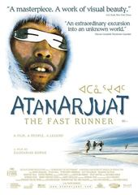

Zacharias Kunuk
Inuk · Canada
Films 29
Nunavut (Our Land) 1995
Director · Television series (13 episodes) · Series

Nanugiurutiga (My First Polar Bear) 2000
Director · Documentary · Inuktitut


Kiviaq versus Canada 2006
Director · Documentary · Inuktitut, English
The Journals of Knud Rasmussen 2006
Co-director with Norman Cohn
Inuit Knowledge and Climate Change 2010
Co-director with Ian Mauro · Documentary
Inuit Cree Reconciliation 2013
Co-director · Documentary · Inuktitut, Cree, English
My Father's Land (Ataatama Nunanga) 2014
Co-director with Norman Cohn · Documentary · Inuktitut, English

Hunting With My Ancestors Episode 2: Net Fishing Under the Ice 2018
Director · Documentary · Inuktitut

Hunting With My Ancestors Episode 3: Dog Team Bear Hunt 2018
Director · Documentary · Inuktitut

Hunting With My Ancestors Episode 6: Seal Pup Hunt 2018
Director · Documentary · Inuktitut

Hunting With My Ancestors Episode 7: Caribou Hunt With Peter Suwaksiork 2018
Director · Documentary · Inuktitut

Hunting With My Ancestors: Walrus Hunting Training Video 2018
Director · Documentary · Inuktitut

Kivitoo: What They Thought of Us 2018
Director · Documentary

One Day in the Life of Noah Piugattuk 2019
Director · Fiction · Feature

Angakusajaujuq (The Shaman's Apprentice) 2021
Director · Animation · Short

Uiksaringitara (Wrong Husband) 2026
Director · Fiction · Feature



Sources
- inuitartfoundation.org ↗ · Inuit Art Foundation profile — “Profile situates Zacharias Kunuk as an Inuit filmmaker and co-founder of the Inuit-led Isuma Productions.”
- imaginenative.org ↗ · I26
- imaginenative.org ↗ · imagineNATIVE 2022 tour
- dzvas27mg75kp.cloudfront.net ↗
Cite this page
MLA
“Zacharias Kunuk.” Indigenous Cinema Atlas: Abya Yala and Turtle Island, created by John Kennedy Godoy, University of Colorado Boulder, 2026, https://jwilliamkennedy.github.io/abya-yala-film-atlas/beta/maker/DIR-0165.html. Accessed .
Chicago
Godoy, John Kennedy. “Zacharias Kunuk.” Indigenous Cinema Atlas: Abya Yala and Turtle Island. University of Colorado Boulder, 2026. https://jwilliamkennedy.github.io/abya-yala-film-atlas/beta/maker/DIR-0165.html.
Identity is recorded only from the filmmaker’s own words or an explicit biographical source; it is never inferred from a film’s subject, language or setting. Images remain with their rights holders.